Martin
Nguyen
AABridging UX, sound, and game design to create unforgettable experiences for everyone.
Making immersive game experiences and intuitive interfaces - currently finishing my degree in Creative Media & Game Technologies at Saxion University.
View My Work
Game Designer & Audio Designer
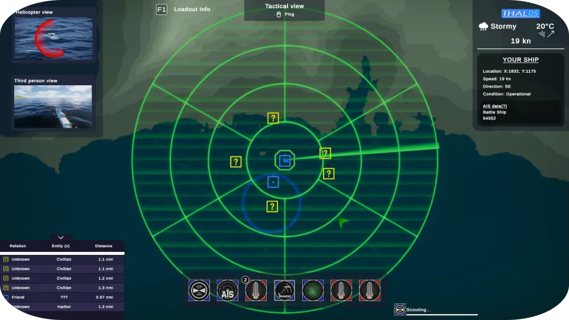
Thales - Naval warfare
Strategy realism game inspired by real-life naval missions. Lead role managing game mechanics, design, and UI/UX.
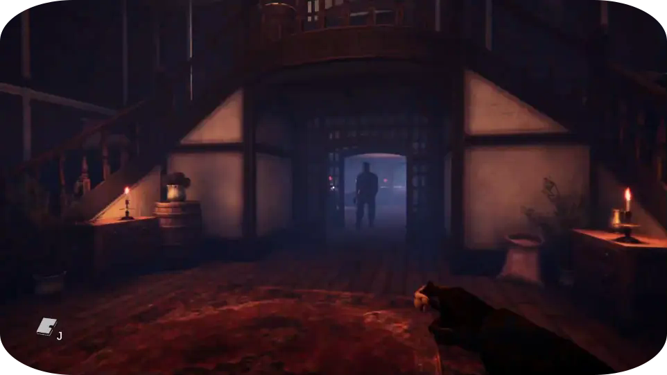
Bentelo butcher
A 3 months 7-person horror game based on regional Overijssel folklore, featuring atmospheric environments and puzzles.
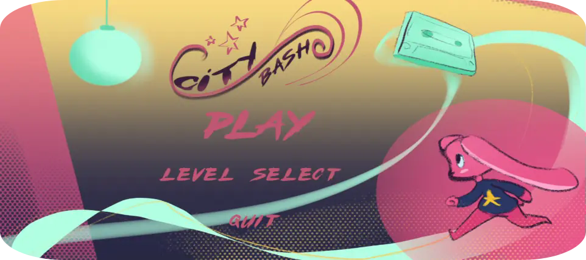
City Bash
6-person mobile innovation project using phone gyroscope motion controls for fluid urban driving and bashing.
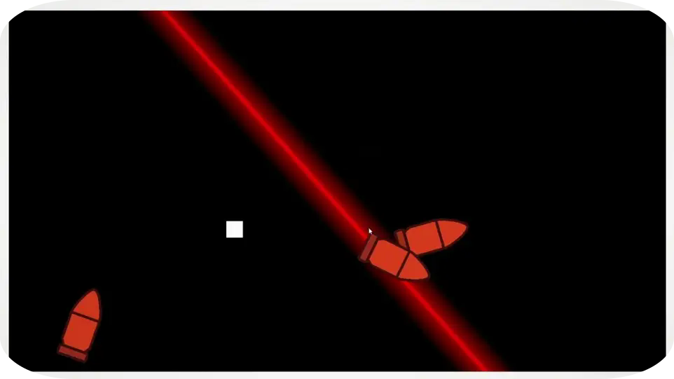
Music Dash
Rhythm prototype game with custom orchestrated musical beats and synchronized FMOD audio mechanics.
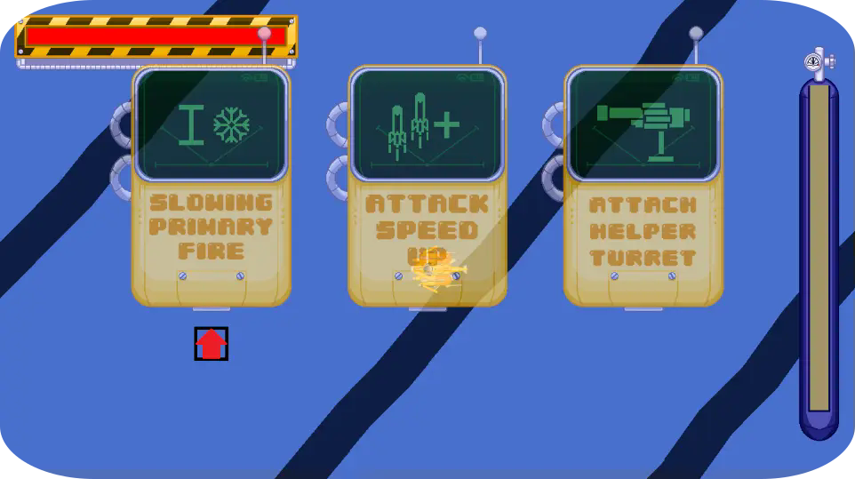
Sea Critters
2D underwater game project focusing on player abilities, rule balance, enemy encounters, and responsive UI/UX.
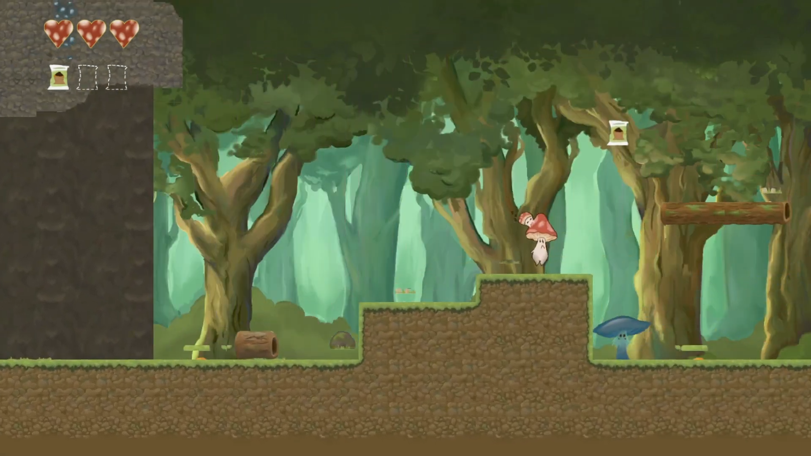
Swing it
2D platforming level design made in Tiled with custom tile collision maps and obstacle progression.

Porto da Lua
UX research and AI-based website design for the EK project, leading a team of 4.
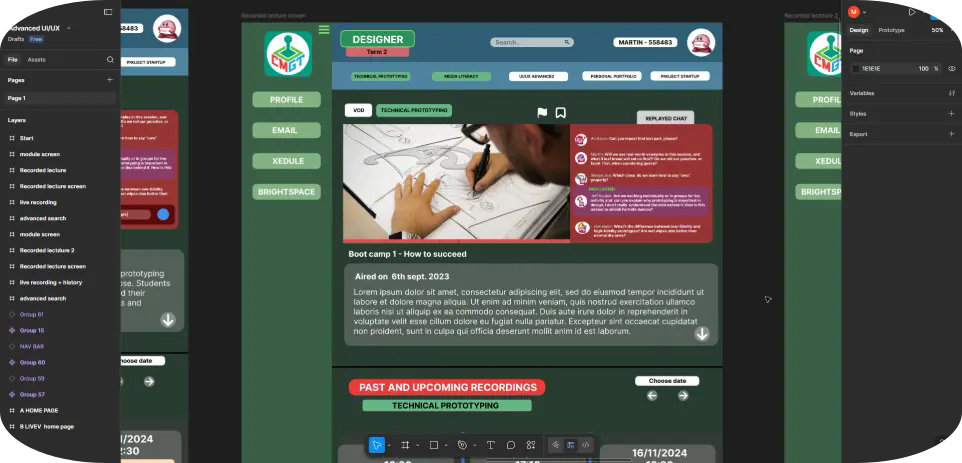
Figma
Prototyped UI and menu flows in Figma for multiple game projects, focusing on player onboarding and accessibility.
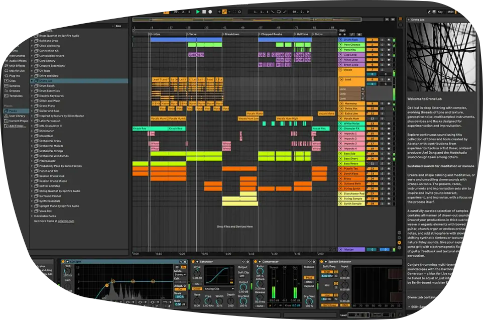
Ableton Live
Comfortable editing, layering, and designing custom sound effects, applying music theory, and composing original music.
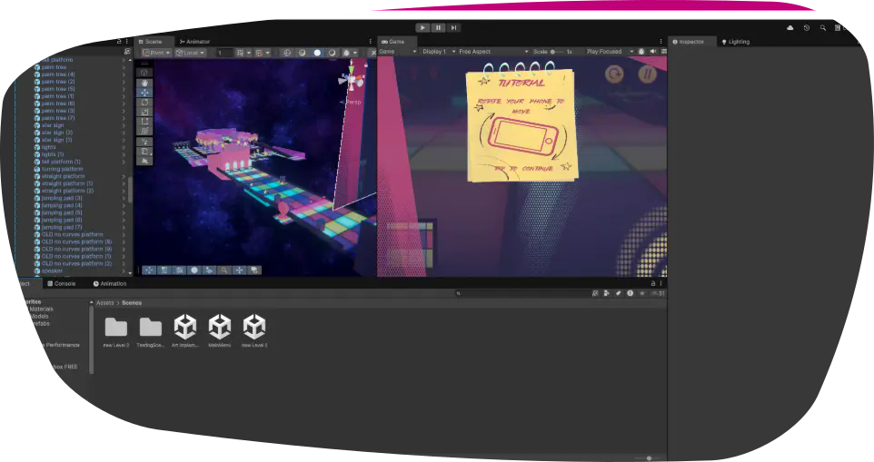
Unity
Familiar with navigation, scene setup, C# gameplay scripting, and rapid game prototyping in past team projects.
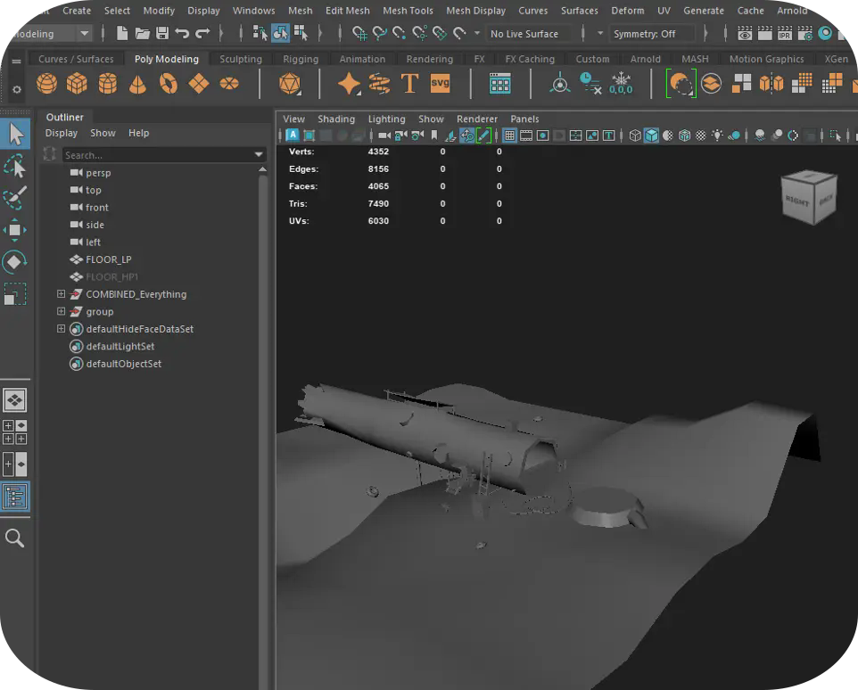
Maya
Experience in UV mapping and 3D modelling in Maya, alongside texture painting with Adobe Substance Painter.
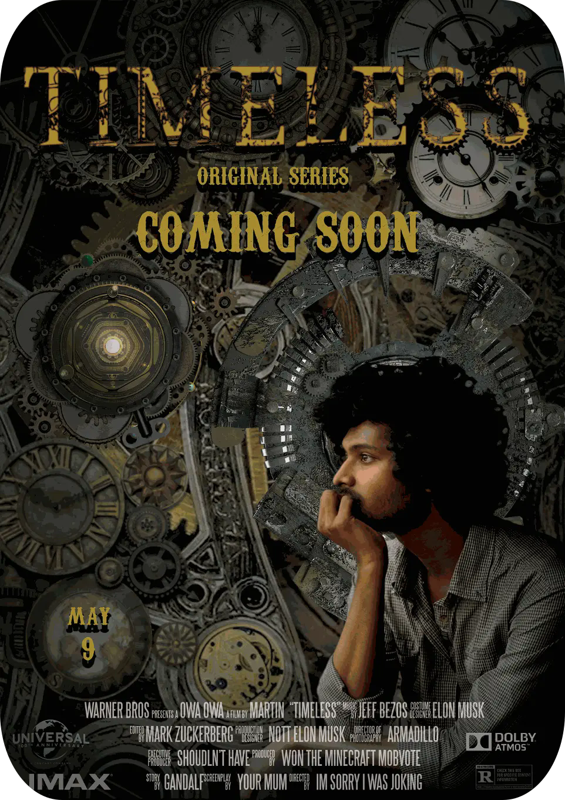
Photoshop
Years of experience using Photoshop for graphic design, asset creation, photo manipulation, and poster compositing.
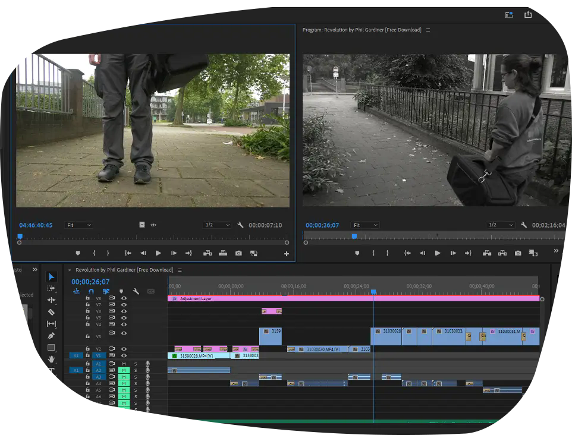
Premiere Pro
Video editing and compositing for gameplay showcase reels, synchronized video cuts, and audio pacing.
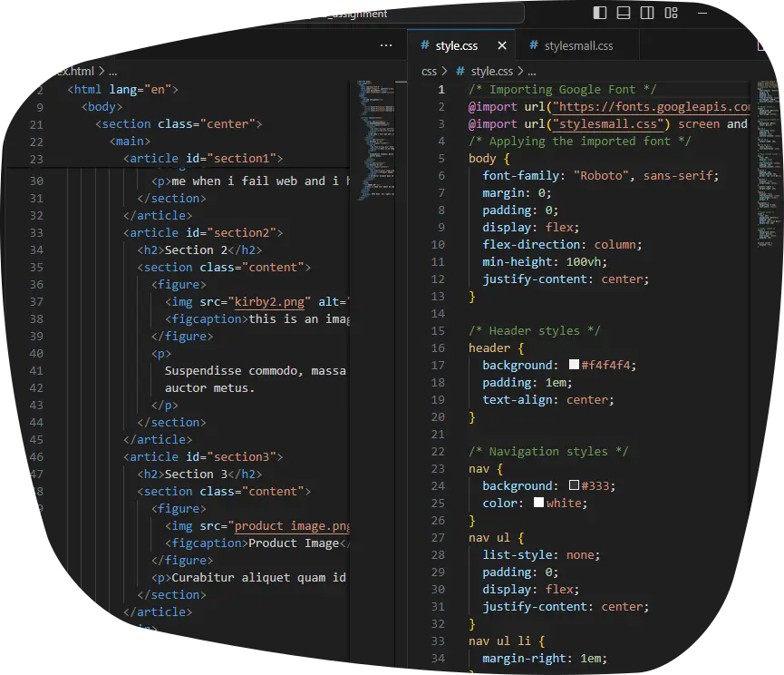
HTML / CSS / JS
Experience creating and styling responsive web pages with HTML and CSS, expanding JavaScript proficiency.
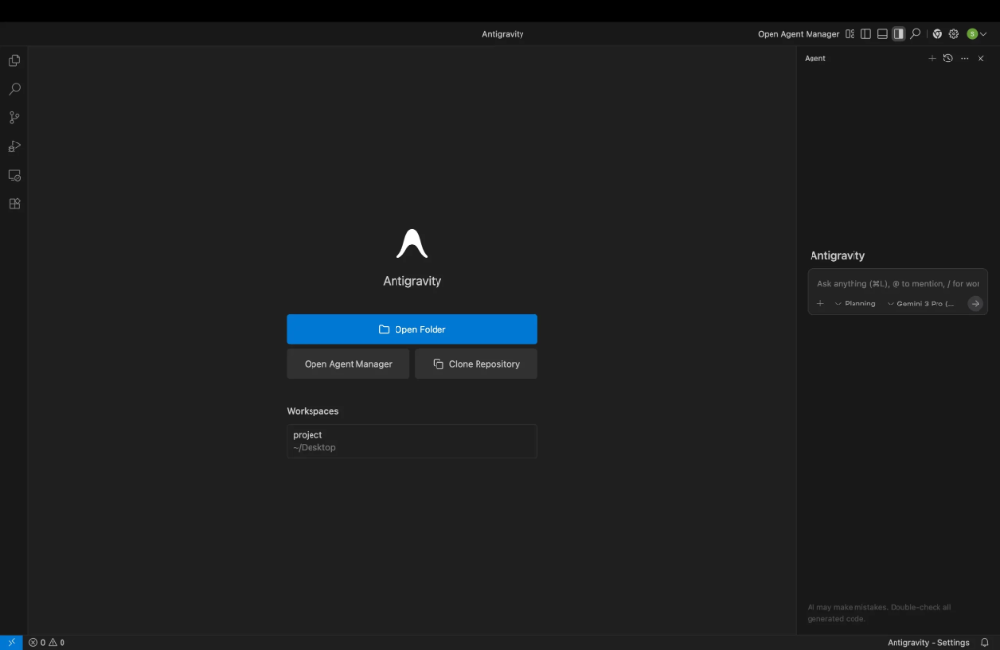
Antigravity
Comfortable using Antigravity to build and launch full-stack web applications and several client websites efficiently.
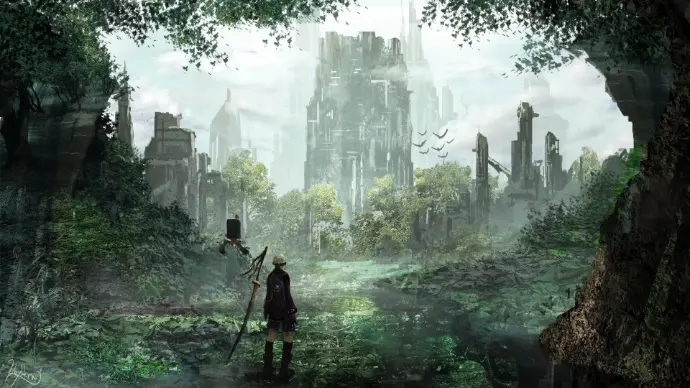
Forgotten - Orchestral Arrangement
Composed and arranged from scratch in Ableton during an exchange program in Copenhagen.
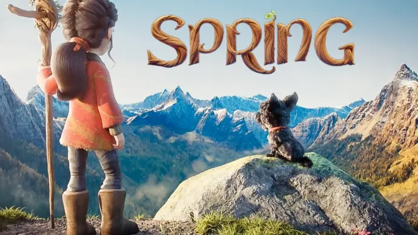
Spring - Scoring a short film
Original emotional animated short film soundtrack composed for the Score Relief competition.
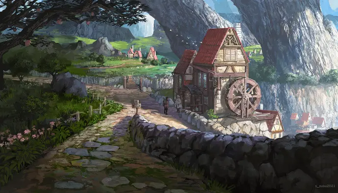
Soft - Orchestral Arrangement
Rich multi-instrument orchestral rendition of my piece 'Soft' arranged and produced in Ableton.
Diamond Jack - Arrangement
Complete original orchestral rescore composed from scratch to accompany the animated film.
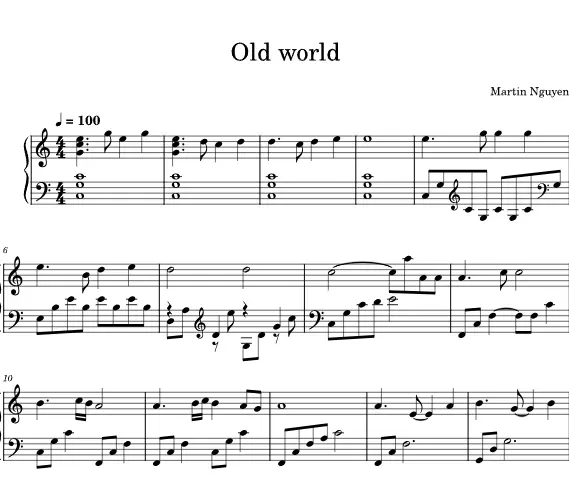
Old world - MIDI
Original interpretation and arrangement based on Dvořák's Symphony No. 9 'From the New World'.
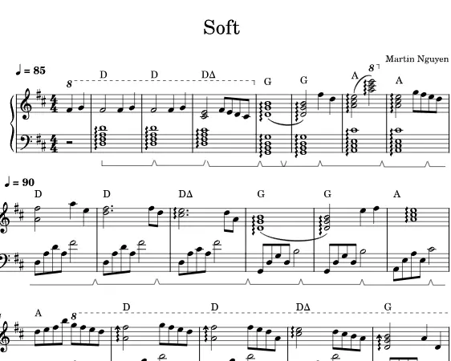
Soft - MIDI
Original expressive piano composition exploring contrasting light and dark harmonic tonalities.